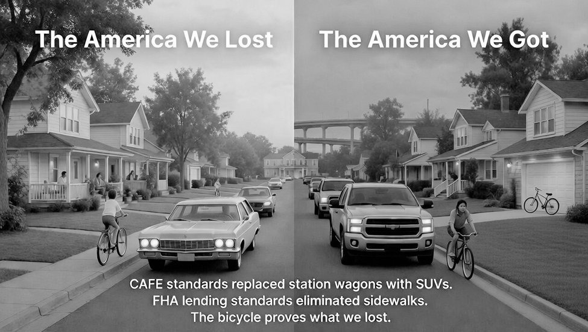

What Happened
The cancellation mechanism, the ratchet, the seventeen statutes, ripeness, the injury, and the bargain working where nothing blocked it.
Back: Page One — The Claim · Next: Page Three — The Case
Each summary below points at a chapter rather than replacing it. None of the seven chapters on this page has been published, so these summaries are the only public account of them.
How the Bargain Was Cancelled: The Regulatory Ratchet
2¾ minutesThis is the mechanism chapter. It does not inventory the statutes and it does not work through the keystone provision; those are the next two chapters. What it establishes is the shape of the thing and the shortest demonstration that it operates as claimed.
The demonstration is a single vehicle. The 2005 Ford F-150 is chosen because the F-Series has been America’s best-selling vehicle every year since 1981 and because every patent covering the 2005 model had expired by 2025. The chapter then asks what happens when an American tries to build it, and answers in specifics rather than in generalities: the truck was certified to EPA Tier 2, most drivetrains to Bin 5, at 0.07 grams per mile of full-useful-life nitrogen oxides and 0.090 grams per mile of non-methane organic gas, against Tier 3’s fleet-average target of thirty milligrams per mile phased in between 2017 and 2025. The 5.4-liter V8 SuperCrew was rated at fourteen city and eighteen highway, sixteen combined. Four Federal Motor Vehicle Safety Standards requirements postdate the platform entirely — electronic stability control and tire-pressure monitoring added in 2007, rear visibility required for vehicles built after 2018, and automatic emergency braking now required. The chapter is precise about where the obstacle actually sits: not in any component, but in the requirement that a vehicle manufactured for initial sale be certified on a current-year platform to current-year safety, emissions, and fuel-economy standards together. The certification is the wall.
The chapter also concedes, at length, the objection a regulatory lawyer raises first. A careless version of the ratchet metaphor is false, and the chapter says so. Corporate Average Fuel Economy has lurched in both directions across four administrations, and in 2025 Congress set the civil penalty for missing the standard to zero while the administration proposed resetting the light-truck target downward through 2031. A reader watching CAFE alone would see a seesaw. The chapter’s answer is that the seesaw is the tell rather than the refutation, and it uses 2025 as a stress test: under unified control of both chambers and the White House, with deregulation as the stated program, the Department of Energy’s anti-backsliding statute was neither repealed nor amended. The workaround required arguing that full rescission is not amendment — a theory now bound for litigation — while allies in Congress drafted petition-based exceptions rather than a repeal. That bill has passed the House and sits in the Senate.
The chapter closes by separating two patterns of injury that arise on different facts. In the blockade, the wall is built before the patents expire, so the public’s right comes into existence into an environment that already forbids its exercise; the F-150 is a blockade case. In the withdrawal, the design was already in the commons and was removed from it after the fact; the ordinary incandescent bulb, manufactured continuously in America from 1879 and progressively withdrawn by rules issued between 2007 and 2023, is the canonical case. The chapter states which is larger in dollars and which is stronger in doctrine, and they are not the same one.
| Why this is in front of you |
|---|
| This is where you decide what kind of case you are looking at. The blockade and withdrawal patterns present the same constitutional question on materially different facts — one asks whether the government may render a future expiration meaningless before it occurs, the other whether it may take back a right already exercised for a century. The chapter argues the blockade is larger in dollar terms and the withdrawal is the stronger doctrinal posture, which is a live strategic choice for whoever files first. The Takings prong summarized on Page Three turns on that distinction. |
The Anti-Backsliding Provision: How 42 U.S.C. § 6295(o)(1) Locked the Ratchet
2¾ minutesOne provision does the load-bearing work, and this chapter is devoted to it: the sentence at 42 U.S.C. § 6295(o)(1), added to the Energy Policy and Conservation Act by the National Appliance Energy Conservation Act of 1987. It forbids the Secretary of Energy from prescribing any amended standard that increases allowable energy use, or decreases required efficiency, for a covered product. The chapter quotes it, then walks what it lacks: no sunset, no waiver for changed circumstance, no expedited procedure, and a waiver mechanism that runs in one direction only — toward stricter state standards, never toward federal relaxation.
The legislative history is reconstructed in unusual detail because the votes are the point. Reagan pocket-vetoed the predecessor bill, H.R. 5465, on 1 November 1986, in a memorandum objecting on four grounds and warning that the bill would eliminate lower-priced models and fall hardest on low-income consumers. On 4 February 1987 the Office of Management and Budget issued a Statement of Administration Policy on S. 83 repeating those four objections and stating that senior advisers would recommend a veto. Thirteen days later the Senate passed it 89 to 6. Thirty-eight of the forty-five sitting Republicans voted against their own President’s stated position. The House passed it on a voice vote on 3 March with no individual member on record, and Reagan signed it on 17 March with no ceremony and no signing statement.
The floor record is where the chapter earns its keep. Phil Gramm, the recognized opponent, had negotiated his amendment with the bill’s sponsor before offering it; the chapter sets out what the amendment did — it removed the perpetual five-year rulemaking mandate, added a petition right with judicial review, and required the Secretary to weigh feasibility and cost-effectiveness — and then what it conspicuously did not touch: the substantive standards, the federal preemption of state law, and the anti-backsliding provision itself. Gramm delivered a bootleggers-and-Baptists analysis from the floor in 1987, four years after Yandle published the phrase and while Stigler and Olson were still confined to the academy, naming the manufacturer-environmentalist coalition in real time. Eighty-nine of his colleagues passed the bill anyway. Four of the six dissenters never spoke. And across roughly one hundred thirty pages of that day’s proceedings, including a coalition letter entered into the Record, the word patent does not appear.
The operative analysis for a practitioner is the section on what the provision does to remedies. The chapter distinguishes enforcement discretion under Heckler v. Chaney from repeal — a President may decline to fine a manufacturer, but the standard remains law, the design remains unlawful to sell, finance, or stock, and the next administration resumes enforcement without writing a rule. It then sets the provision against the ordinary pattern elsewhere in the regulatory state, where the EPA Administrator may delist a chemical, the FAA Administrator may recertify an aircraft type, and the FDA Commissioner may reapprove a withdrawn drug. Here a federal court may hear a citizen suit demanding a stricter standard and cannot order a weaker one, because the Secretary has no authority to issue one.
| Why this is in front of you |
|---|
| This chapter forecloses the answer a defendant agency would otherwise give, which is that the plaintiff should exhaust an administrative remedy. There is none. The administrative path is closed by statute in one direction, which is precisely why the argument the book makes is constitutional rather than an Administrative Procedure Act claim — a court holding the statute in conflict with Article I, Section 8, Clause 8 is not ordering the Secretary to do what the statute forbids; it is removing the statute. If you doubt that a remedy has to run through the courts, this is the chapter that explains why. |
The Wall Itself: Seventeen Laws That Hold the Patent Bargain Hostage
5 minutesThis is the inventory, and it is the chapter to read if you want to know whether the argument rests on an actual body of federal law or on an impression of one. Seventeen frameworks across eight federal agencies, walked by mechanism rather than by agency, each given a date, a statutory or regulatory citation, a stated purpose, and the specific effect on patent-expired remanufacture that follows from the first two.
The mobile-source group runs from the Clean Air Act of 1970 at 42 U.S.C. §§ 7401 et seq., with the mobile-source provisions at § 7521 and the successive tiers finalized in 1991, 1999, and 2014 with a fourth in development, through the Federal Motor Vehicle Safety Standards at 49 C.F.R. Part 571 under 49 U.S.C. § 30111. Four post-2014 mandates are named individually with their finalization and compliance dates: the Event Data Recorder rule at 49 C.F.R. § 563, the rear-visibility standard at FMVSS 111 finalized in April 2014 with full compliance required as of May 2018, the automatic-emergency-braking standard at FMVSS 127 finalized in April 2024 with phased dates through model year 2029, and the driver-monitoring rulemaking following the Infrastructure Investment and Jobs Act of 2021. The energy group is the Energy Policy and Conservation Act of 1975, which also houses the Corporate Average Fuel Economy program at 49 U.S.C. § 32902, together with its 1987 anti-backsliding amendment treated in the preceding chapter.
Then the frameworks a reader would not have predicted. The National Technology Transfer and Advancement Act of 1995, Public Law 104-113, directs agencies to incorporate privately developed consensus standards by reference rather than writing federal specifications from scratch. The chapter works a furnace example down three levels of incorporation — federal efficiency rule to private test method to sensor-calibration procedure to a thermistor still under patent — and names the trap that follows: a remanufacturer who licenses the patented component to pass certification is no longer building a patent-expired product. The commons has not been entered; it has been bypassed. The Resource Conservation and Recovery Act of 1976 and the Occupational Safety and Health Act of 1970 operate as compliance overlays that a new entrant pays from a standing start while the incumbent has amortized them across decades. The Consumer Product Safety Act of 1972 at 15 U.S.C. §§ 2051 et seq. adds the recall authority at section 15, which the chapter identifies as a distinct entry barrier beyond certification cost. The Federal Aviation Administration’s airworthiness regime at 49 U.S.C. § 44704 and 14 C.F.R. Parts 21, 23, 25, 27 and 29 supplies the sharpest illustration: the patents on the Cessna 172, the most-produced aircraft in history, expired decades ago, and the type certificate did not — it is held by Cessna’s corporate successor, and expired patents do not transfer it. The Coast Guard and ratified international maritime conventions close the federal set, and the California Air Resources Board is included for the federalism complication it introduces, with Geier v. American Honda Motor Co. (2000) noted as having already addressed preemption on the FMVSS side.
The strongest passage is not the inventory. It is a demonstration the chapter runs through the public patent record on one function — catalyst-efficiency monitoring, the on-board diagnostic that decides whether a converter still works. California Air Resources Board Executive Order A-10-1008 certifies the 2002 Ford Expedition and Lincoln Navigator with the 5.4-liter V8, test group 2FMXT05.4RF8, under 13 C.C.R. § 1968.1, and lists the certified hardware. The chapter then tables nine patents performing the monitoring function inside it, from US 5,357,751 filed in 1993 and expired in 2013 through US 12,196,640 filed in 2022 and in force today, distinguishing patents that ran their full term from those abandoned early for nonpayment of maintenance fees, and documenting each link by face citation or common assignee. A second table dates the regulatory steps — on-board diagnostic monitoring adopted in 1989, the low-emission vehicle programs, the federal tiers, the 2002 rewrite of the monitoring rule — and the chapter invites the reader to set the two side by side. It is disciplined about what that proves: it says explicitly that correlation is not proof and that the pattern would not convict anyone.
| Year | Regulatory step | Effect on the monitored function |
|---|---|---|
| 1989 | CARB § 1968.1 (OBD II) adopted | Catalyst and oxygen-sensor monitoring required |
| 1990 | LEV I adopted | First Low-Emission Vehicle standards (model years 1994–2003) |
| 1991 | Federal Tier 1 final rule | Phased in over model years 1994–1997 |
| 1994 | § 1968.1 and LEV I implementation begins | Monitoring operative on new vehicles |
| 1996 | OBD II universal; EPA § 209(b) waiver | Required on essentially all new vehicles |
| 1999 | LEV II adopted; federal Tier 2 adopted (Dec. 21) | Tighter NMOG/NOx (LEV II from model year 2004; Tier 2 2004–2009) |
| 2002 | CARB § 1968.2 adopted (codified 2003; model year 2004 onward) | New and tightened light- and medium-duty monitoring requirements |
| 2012 | LEV III adopted | Combined NMOG+NOx, roughly 70 percent tighter (model years 2015–2025) |
| 2014 | Federal Tier 3 finalized (Mar. 3) | Phased in over model years 2017–2025 |
Two further passages do defensive work. The chapter confronts the International Trade Commission’s finding that the United States is the world’s largest producer of remanufactured goods, at no less than forty-three billion dollars a year with motor-vehicle parts among the three largest sectors, and explains why a thriving parts trade is not evidence against the wall — that trade operates below the certification gate, on components re-entering service for vehicles already certified, and the gate stands at the assembled product. And it states the remedy in the form a court would have to grant, which is the same accommodation federal regulation already extends to existing owners: a 1970 truck on the road today is not required to retrofit current-tier emissions controls or current safety equipment, because the rules in force when it was first certified continue to govern it. The chapter ends with twelve ordinary household items — air conditioners, dishwashers, freezers, furnaces, heat pumps, lawn mowers, ovens, refrigerators, snow blowers, stoves, table saws, water heaters — each matched to the framework and effective date that blocks it.
| Why this is in front of you |
|---|
| This is the exhibit list, and it is where you test whether the complaint can be pleaded with particularity. Every framework carries a citation and a date, which is what a court will require before it will treat a cumulative-effect argument as anything other than rhetoric. Two passages matter beyond the inventory: the patent-relay trace shows the argument can be documented from the public record rather than asserted, and the remanufacturing-industry passage disposes in advance of the rebuttal a government brief would lead with. Note also which way the chapter cuts against itself — sixteen of the seventeen frameworks are formally reversible by ordinary legislative or administrative action, which is exactly why the argument has to reach the one that is not. |
You No Longer Need to Break a Law to Challenge One
3 minutesThis chapter is about procedural posture, and its claim is narrow: the case is filable now, by a plaintiff who breaks no law, and it identifies four doors into the federal courthouse together with the plaintiffs who have already walked through each.
The sovereign door is Massachusetts v. EPA, 549 U.S. 497 (2007), and the special solicitude it extends in standing analysis. The chapter argues that doctrine reads at least as naturally for tribal nations, whose sovereignty predates the Constitution, and supports the claim with a litigation record rather than an inference: United States v. Sioux Nation of Indians, 448 U.S. 371 (1980), decided 8–1 on a Fifth Amendment Takings theory arising from an 1877 Act of Congress and the Fort Laramie Treaty of 1868, with just compensation of $17.1 million plus interest running from 1877 — an award since accrued past a billion dollars and still refused, because the Sioux want the Black Hills; Menominee Tribe of Indians v. United States, 391 U.S. 404 (1968), decided 6–2 on the Treaty of Wolf River of 1854 against the Termination Act of 1954; and Cobell v. Salazar, filed in 1996 by Elouise Cobell of the Blackfeet Nation on behalf of roughly 500,000 tribal members and settled in 2010 for $3.4 billion. The operational point the chapter draws from the tribal path is that there are 345 federally recognized tribal nations in the contiguous forty-eight states, each deciding independently whether to file, and no central authority able to veto a tribal council.
The fourth sovereign category has a precedent of its own. In Printz v. United States, 521 U.S. 898 (1997), two elected sheriffs — Jay Printz of Ravalli County, Montana, population 45,000, and Richard Mack of Graham County, Arizona, population 38,000 — challenged provisions of the Brady Act before those provisions took effect against them, and won 5–4 in an opinion by Justice Scalia. The chapter draws two lessons from it, one procedural and one about who a constitutional plaintiff has to be.
The remaining doors are statutory and doctrinal. The Declaratory Judgment Act of 1934 at 28 U.S.C. §§ 2201–2202, sustained against an Article III challenge in Aetna Life Insurance Co. v. Haworth, 300 U.S. 227 (1937), is identified as the vehicle every plaintiff category in the book would use. MedImmune, Inc. v. Genentech, Inc., 549 U.S. 118 (2007) supplies what the chapter calls the trap inside the fix — the danger that paying compliance costs is treated as conceding their validity — and breaks it, so that compliance under protest becomes the injury rather than a waiver. Susan B. Anthony List v. Driehaus, 573 U.S. 149 (2014), decided unanimously, opens the door for a plaintiff facing a credible threat of enforcement who has not yet acted. American Hospital Association v. Becerra, 596 U.S. 724 (2022) — a 9–0 opinion by Justice Kavanaugh issued 15 June 2022, arising from a 28.5-percent cut to 340B reimbursement and roughly $3.2 billion in lost reimbursement over two fiscal years — is offered as the cleanest associational-plaintiff precedent, and the chapter is candid that it comes from a different industry than the one the book leads with. Two 2024 decisions close the chapter: Loper Bright Enterprises v. Raimondo, 603 U.S. 369 (2024), leaving agency interpretations Skidmore weight but not deference, and Sheetz v. County of El Dorado, 601 U.S. 267 (2024), holding unanimously that the Takings Clause reaches legislatively imposed exactions.
| Why this is in front of you |
|---|
| Standing and ripeness are where this case gets dismissed if it gets dismissed anywhere, and this chapter is the answer to a motion you can already draft. Two holdings carry disproportionate weight: MedImmune, because every plaintiff category in the book is paying the compliance costs it would challenge, and Sheetz, because the wall is a legislatively imposed exaction and the legislative form would otherwise have been the government’s cleanest escape. The nineteen plaintiff categories and both constitutional prongs are developed on Page Three; this chapter establishes that they can reach a merits ruling at all. |
The $22 Trillion Wealth Transfer
4 minutesThis chapter defends a single number — $3,385 per household per year — and it spends most of its length showing the reader how the number was built rather than asserting it. The method is disclosed to the point of vulnerability, which is the chapter’s deliberate posture.
Two independent AI-assisted analyses, published in December 2025, produced the brackets. The first worked from the Bureau of Labor Statistics Consumer Expenditure Survey across more than sixty product categories from 1975 to 2025, summing direct savings for buyers of remanufactured goods and competitive pressure of eight to fifteen percent on the price of new ones, and returned $15.73 trillion — characterized by its own author as the floor rather than the ceiling. The second worked from the Bureau of Economic Analysis Industry Economic Accounts through the Federal Reserve Economic Data system, aggregating four spending categories from 1970 to 2025 to $48.4 trillion nominal, bringing that to $81.1 trillion in present value at three percent, and applying a savings rate of twenty-five to forty percent for $28 trillion. The $22 trillion figure used throughout the book is the rounded midpoint of a stated floor and a best estimate, which the chapter notes is by construction more conservative than the best estimate alone. The savings rates were not invented: the chapter sets the $6,000-to-$15,000 prices charged for American-derived designs in remanufacturing markets against $25,000 to $49,800 for the American equivalents, an implied range of fifty to eighty-eight percent, and records that the floor calculation applied forty to sixty instead.
| Claude Sonnet 4.5 | Grok 4.1 | |
|---|---|---|
| Data source | BLS Consumer Expenditure Survey | BEA Industry Economic Accounts via FRED |
| Scope | 60+ product categories behind the regulatory wall | Motor vehicles, household durables, recreational vehicles, nonresidential equipment |
| Time frame | 1975–2025 | 1970–2025 |
| Method | Direct savings for remake buyers plus 8–15% competitive pressure on remaining buyers | 34% midpoint savings rate (range 25–40%) applied to $81.1T present-value base |
| Result | $15.73 trillion | $28 trillion |
| Author’s characterization | “The floor, not the ceiling” | Best estimate, market-adjusted |
| Per household per year | $2,420 | approx. $4,300 |
| Headline figure used in this book | $22 trillion cumulative · $3,385 per household per year · (midpoint of the two estimates) | |
Seven categories of cost are then named as excluded, and a two-part table sets what the floor counts against what it does not. The chapter puts the plausible true total at $30 to $45 trillion over the same period and argues that the exclusions strengthen rather than dilute the case, because a floor figure is one whose author has shown the reader in advance every place the real number is larger. On the innovation tax it offers the entry-cost figure that does the work: certifying a new mechanical design under post-1970 standards runs between $50 million and $300 million per model.
| Category | Foregone savings, 1975–2025 |
|---|---|
| Counted in the floor figure | |
| Transportation (cars, trucks, RVs, motorcycles) | $11.13 trillion |
| Agricultural and construction equipment | $1.46 trillion |
| Residential appliances (HVAC, water heaters, washers, dryers) | $1.26 trillion |
| Commercial aviation and rail | $0.83 trillion |
| Commercial and industrial equipment | $0.48 trillion |
| General aviation and marine (private aviation, boats) | $0.12 trillion |
| Lawn and garden equipment | $0.12 trillion |
| Industrial machinery (CNC, robots, presses) | $0.11 trillion |
| Medical equipment (MRI, CT, X-ray, ultrasound) | $0.09 trillion |
| Building systems (elevators, chillers) | $0.07 trillion |
| Other categories (telecom, food service) | $0.06 trillion |
| Floor total | $15.73 trillion |
| Excluded from the floor figure | |
| Compounding economic effects (lost business formation, diminished entrepreneurship) | not priced |
| Indirect costs through the rest of the economy (housing, food, transportation ripple) | not priced |
| Time value of money (present-value calculation) | not priced |
| Specialized industrial equipment (mining, oil and gas, semiconductor, pharmaceutical production, textile, packaging) | not priced |
| Commercial vehicles beyond those counted (delivery vans, buses, specialized trucks) | not priced |
| Building materials and systems affected by energy codes (windows, insulation, roofing) | not priced |
| The innovation tax (products never developed because of regulatory barriers) | not priced |
| Plausible value of excluded categories | $15–30 trillion |
| Plausible true total over 50 years | $30–45 trillion |
The aggregate is then translated to the household. Median household income bought a new pickup for 34.4 percent of one year’s earnings in 1970 and 54.3 percent in 2025. Three affordable American family sedans consumed thirty-five to thirty-eight percent in 1970; the equivalent purchase now consumes roughly seventy percent, and the chapter notes that each of the three was discontinued. The ratio of median household income to median home price fell from 41 percent to 20. The chapter isolates one variable it can watch cleanly — the patent royalty, which is simply a cost that was in the price and then was not — and points to the calculator and bicycle comparisons developed two chapters later.
| Why this is in front of you |
|---|
| This is the quantum of injury, and it is also where a hostile expert would begin. The chapter anticipates that by publishing the derivation rather than the conclusion: data sources, time frames, savings assumptions, and both bracket figures are on the page for you to attack. Two figures matter for pleading rather than for scale — the per-household annual cost, which supports individual and associational plaintiffs, and the procurement arithmetic that turns the same dollar into a county or state budget line, which is what supplies a sovereign plaintiff a concrete and particularized injury. The chapter is explicit that magnitude alone establishes nothing constitutional; large transfers can be lawful. |
When the Bargain Worked: Pre-1900 American Prosperity
3¾ minutesHaving established what the wall does, the book turns to what the bargain did before there was a wall. This chapter argues the historical baseline in two registers, and the evidentiary weight sits in the second.
The first register is the American saddle, chosen because the pattern is unusually clean. Three integrated working saddles carried the American rider across the continent — the Model 1904 McClellan, adopted by the Army in 1859 and never patented; the Visalia stock saddle, developed from 1869 by the Mexican-American saddlemakers Juan Martarell, Alsalio Herrera and Ricardo Mattley; and the Pony Express mochila, assembled by Russell, Majors and Waddell in 1860 with no commercial reason to file. None was patented as an integrated design. All three absorbed patented components as those components expired, and the chapter names them with numbers and dates: adjustable cavalry rigging in 1885, a stitched-leather saddle tree with spring-steel reinforcement in 1914, stirrup-leather mounting in 1923, a unified seat cover in 1900, cable rigging from the Hamley brothers of Pendleton in 1913, an adjustable rigging plate from Elko in 1912, a girth with mounted take-up in 1892, and a military spring seat filed in 1896 by William D. Davis, a Buffalo Soldier of the Tenth Cavalry stationed at Fort Assiniboine.
The outcome is measured in what a rider could do in a day. A colonial rider on the English hunting saddle covered twenty to thirty miles. An 1904 cavalry trooper on a McClellan covered twenty-five to thirty at operational pace and forty to fifty on a forced march. A Pony Express rider covered seventy-five to one hundred in a relay segment, and the full chain averaged roughly one hundred eighty miles a day across a 1,966-mile route, the fastest documented run finishing in seven days and seventeen hours. The chapter dates the end of the trajectory precisely, at 1925, when registered motor vehicles passed the combined population of horses and mules.
The second register is the pattern proof, and it is the one a court would want. Nine product categories from the early republic, eight of them tabled with a during-patent price, a post-expiration trajectory across the 1830s, 1860s and 1880s, and a computed real-terms drop. The ninth, the proto-bicycle, is handed forward to the next chapter. The chapter states why these eight and not others — they are the categories whose historical price record is documented well enough to compute a before-and-after with confidence — and disclaims any suggestion that the list is exhaustive.
| Invention (inventor, filed / expired) | During-patent price | Post-expiration trajectory | Real-terms drop |
|---|---|---|---|
| Nail-making machine (Jacob Perkins, 1795 / 1809) | ~$6 per pound (hand-forged nails) | ~$3.20/lb by 1830s; ~$1.50 by 1860s; ~$0.80 by 1880s with machine-cut production; ~$0.30 by 1890s with mass production | 69.4% |
| Wooden shelf clock (Eli Terry, 1816 / 1830) | ~$150 (complete clock) | ~$80 by 1840s; ~$50 by 1860s; ~$30 by 1890s with mass production | 64.4% |
| Screw-cutting machine (David Wilkinson, 1798 / 1812) | ~$4 per pound (screws) | ~$2.50/lb by 1830s; ~$1.20 by 1860s; ~$0.60 by 1880s with automated threading | 64.2% |
| Cast-iron plow (Charles Newbold, 1797 / 1811) | ~$350 (complete plow) | ~$200 by 1830s; ~$150 by 1860s; ~$100 by 1880s as steel plows competed but cast iron remained common | 57.1% |
| Cotton gin (Eli Whitney, 1794 / 1808) | ~$1,900 (service-based) | ~$1,200 by 1830s; ~$800 by 1860s; ~$500 by 1880s as mass-produced gins entered the market | 56.1% |
| High-pressure steam engine (Oliver Evans, 1804 / 1818) | ~$12,000 (industrial engine) | ~$8,000 by 1830s; ~$5,000 by 1860s; ~$3,000 by 1880s with design refinements | 55.6% |
| Potash production process (Samuel Hopkins, 1790 / 1804) | ~$12 per bushel | ~$8 by 1830s; ~$5 by 1860s; ~$3 by 1880s as chemical alternatives emerged | 55.6% |
| Cotton carding machine (Amos Whittemore, 1797 / 1811) | ~$0.30 per pound | ~$0.20/lb by 1830s; ~$0.15 by 1860s; ~$0.10 by 1880s with factory scaling | 50.0% |
The closing section supplies the causal account. The Patent Act of 1790 gave the Patent Office one function and created no parallel agency with authority over the post-expiration product, and the chapter argues that this structural absence, rather than any affirmative protection, is what let the pattern run. The Supreme Court did not need to intervene because nothing was challenging it; when the Court did speak, in Scott Paper Co. v. Marcalus Manufacturing Co. (1945), Sears, Roebuck & Co. v. Stiffel Co. (1964), Graham v. John Deere Co. (1966) and Bonito Boats, Inc. v. Thunder Craft Boats, Inc. (1989), it spoke consistently.
| Why this is in front of you |
|---|
| A court asked to find a constitutional injury will want to know what the clause produced when it operated unobstructed, because that is the measure of what has been lost. This chapter supplies a documented American record rather than a theoretical one: nine categories, dated expirations, computed real-terms price drops, and a stated basis for why those categories were selected. It also identifies the four decisions that form the doctrinal spine of the Patent Clause prong on Page Three, and its account of why they went unlitigated for a century is the historical half of the answer to “why has nobody filed this.” |
The Bargain Still Works: Bicycles, Calculators, and the Political Warning of Firearms
5¾ minutesThe historical record answers whether the bargain ever worked. This chapter answers the harder question, which is whether it still would, and it does so with three American sectors operating today outside the compliance wall. The evidentiary structure is a natural experiment run inside a single jurisdiction: same country, same patent law, same period, and the presence or absence of a federal certification regime as the variable.
The bicycle is traced from Lallement’s pedal velocipede, U.S. Patent 59,915, granted in 1866 and bought by Albert Pope in 1878, who enforced a ten-dollar royalty on every bicycle any competitor sold and held the price between one hundred and one hundred fifty dollars — six months of an ordinary laborer’s wages. The fourteen-year term ran out in 1880. Starley’s Rover Safety Bicycle of 1885 was never patented at the integrated level, and the Census of Manufactures records American production rising from roughly thirty thousand units in 1890 to more than a million by 1899, with prices falling from about one hundred fifty dollars to thirty. The chapter then lists sixteen component technologies with their originators and expiration status, from the steerable two-wheel frame and the roller chain through clipless pedals, integrated brake-and-shift levers, suspension forks and mechanical disc brakes. The affordability record is stated in labor hours rather than dollars: a Sears catalog bicycle in 1910 cost $11.95 against an eighteen-cent hourly wage, or sixty-six hours of work; a comparable bicycle today costs roughly ninety-eight dollars against a wage above thirty-two dollars, or about three hours. The contemporary case is a 2005 Trek Madone 5.2 at thirty-four to thirty-six hundred dollars, roughly fifty-four hundred in current currency, against a 2026 full-carbon road bicycle certified by the Union Cycliste Internationale at eleven hundred dollars, built entirely on expired-patent technology at a comparable weight.
The safety record is where the chapter takes its largest risk and handles it carefully. Drawing on Insurance Institute for Highway Safety and Fatality Analysis Reporting System data, it reports that American cyclists under twenty killed in crashes with motor vehicles fell from 786 in 1975 to 93 in 2023 — an eighty-eight percent decline achieved with essentially no federal product regulation on the bicycle, whose entire federal design mandate is a set of reflectors. Against that it sets the motor-vehicle fatality rate falling from 3.35 to 1.26 per hundred million vehicle-miles, and a Centers for Disease Control population-rate series showing cyclist mortality falling from 0.41 to 0.23 per hundred thousand between 1975 and 2012. The chapter states plainly that the denominators are not identical. It then attributes the safety gains to six specific improvements built on expired patents — disc brakes, high-brightness LED lighting traceable to Holonyak and Nakamura, Kevlar-belted puncture resistance on DuPont’s 1965 aramid patent, aluminum and carbon frames as Cannondale’s and Trek’s patents expired, drivetrain reliability descended from Renold’s 1880 roller chain, and step-through frame geometry — none of them federally mandated.
The chapter does not claim every trend runs its way. Adult cyclist fatalities rose from 212 in 1975 to 1,041 in 2023, with 1989 as the crossover year when adults first outnumbered children among American cyclists killed. It attributes that rise not to the bicycle but to the road and the vehicles sharing it, and traces both to federal choices: the light-truck category under the 1975 fuel-economy statute, which exempted truck-frame vehicles from the passenger-car standard and the Gas Guzzler Tax; the Insurance Institute’s measurement of the resulting fleet at roughly four inches wider, ten longer, eight taller and a thousand pounds heavier than its early-1990s equivalent, with hoods above forty inches forty-five percent more likely to cause a pedestrian fatality than hoods at thirty or below; and Federal Housing Administration lending standards that required wide rights-of-way and no sidewalks, after which a 2002 Bureau of Transportation Statistics survey found a third of Americans reporting none, and the share of American children walking or bicycling to school fell from forty-eight percent in 1969 to ten percent in 2017.

The calculator supplies the cleanest single comparison in the book, because the product did not change. The HP 12C launched in 1981 at one hundred fifty dollars, equal to $530.36 in 2025 currency; sold for about eighty dollars by 2011; and retailed at $49.99 in 2025, still in production and still in the same physical case — a real-terms drop of roughly 90.6 percent across forty-four years, with public-domain clones reproducing its keypad, function set and entry system once the patents expired in the early 2000s. The chapter sets that beside the F-150 over the same span: a 1976 base model at a suggested retail price of $4,235, about $23,400 in current currency, against a 2025 base model at $37,250 — a real-terms increase of roughly fifty-nine percent. One product fell about ninety percent; the other rose about fifty-nine. The mechanical core of the 1976 truck has been public domain for decades and cannot lawfully be built at that technology level by anyone, Ford included.
The firearms section carries the chapter’s title warning. The record runs from Colt’s 1836 revolving-cylinder patent, whose expiration in the late 1850s brought Smith & Wesson into the market within a year and Remington after, through the lever-action and pump-action eras to Browning’s more than one hundred firearm patents. The Colt Model 1911 is the proof: standard United States military sidearm for seventy-five years, core patents expired by the early 1930s, and manufactured in 2026 by more than thirty competing companies at prices from under five hundred dollars to over three thousand. The chapter describes the federal burden accurately rather than dismissively — a Type 07 federal firearms license, serialization and recordkeeping, ATF inspection, and the sporting-purposes import test of the 1968 statute — and argues only that the order of magnitude differs from what surrounds the post-1970 vehicle. The question it then asks is why this category escaped, and its answer is that the variable was political rather than technological: a constitutional anchor and an organized constituency, neither of which the bicycle or the calculator has. The chapter is careful on the moral register, holding two claims at once — that the wall can be produced by structural incentives without requiring bad faith from most participants, and that some legislators were corrupt, some lawyers cynical, and some insiders built it knowing what they were defending, both populations being morally responsible. It closes by noting that the wall is permanent only against actors below the constitutional level.
| Why this is in front of you |
|---|
| This is the causation exhibit. The government’s answer to the injury figures on this page will be that prices rose for reasons having nothing to do with patent expiration — inflation, features, labor, materials. These three sectors are the control that isolates the variable, because they share the country, the patent law and the period, and differ only in whether a certification regime stands at the gate. Two things are worth your attention on credibility: the chapter reports the adult-cyclist fatality increase that cuts against its own framing, and it states that the two safety series it compares use different denominators rather than letting the comparison pass. The firearms section is also the book’s clearest statement that the wall is a political artifact rather than a technological necessity. |